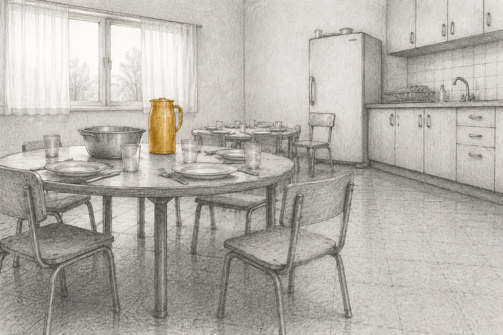

בואו נחזור לבֶּיתֶלָדִים
מפגשי זום פתוחים בעקבות הספר ״עיניים גדולות זה לא טוב״

יש זיכרונות שלא נשארים בעבר. הם ממשיכים לחיות בקשרים שלנו, בדרך שבה אנחנו אוהבים, נפרדים, מחכים, מתקרבים ומתרחקים.
אני מזמינה אתכם לחזור יחד אל הבֶּיתֶלָדִים - אותנו, הילדים, ואתכם - הורינו.
המפגשים פתוחים לנו - בני ובנות קיבוץ, לכם - ההורים - ולכל אחד שמוצא בהם עניין. יש דברים שהדפנו מלשמוע כשנאמרו על ידי הורינו-שלנו, אבל אולי נוכל לשמוע מהורים אחרים; יש דברים שנהדפו על ידי הורינו כשנאמרו על-ידינו, ילדיהם-שלהם, אבל אולי יוכלו להישמע מילדים שאינם אנחנו.
בכל מפגש נעלה את אחד הטקסים שכולנו מכירים - ההתעוררות בבוקר, המקלחות, הארוחות, ההשכבה, הלילה ועוד רבים אחרים. נחזור אל הריצה ברגליים יחפות, אל החיבוק לאבא או לאמא שהלכו בסוף ההשכבה, אל רותק׳ה שמדדה לנו חום בחדר איזולציה. נחזור אל הרגעים הקטנים שעיצבו אותנו, וננסה להתבונן מחדש בילדות שלנו, מתוך הפרספקטיבה שיש לנו היום כמבוגרים:
מה ילד צריך כדי לגדול?
איך ילדים מסתגלים כשהצרכים שלהם אינם מקבלים מענה?
איך דרכי ההסתגלות שפיתחנו אז ממשיכות לעיתים ללוות אותנו גם היום – בזוגיות, בהורות, בקשרים שלנו עם אחרים ובעיקר ביחס שלנו לעצמנו?
לא כדי לשפוט.
לא כדי להאשים.
אלא כדי להבין.
להבין את המערכת שבתוכה גדלנו.
להבין את עצמנו.
ננסה להחזיק יחד שתי אמיתות שאינן סותרות זו את זו: להבין שהמערכת שבתוכה גדלנו לא יכלה מעולם לתת במלואו את שלשמו נבנתה, ובה בעת להבין שהמגבלות שלה אינן מבטלות את האהבה שמתוכה נבנתה.
ואם דרך אלה, תמצא, ולו נפש אחת, מעט יותר שלום עם העבר החי שלנו - דייני.
השאירו את הפרטים שלכם ונעדכן אתכם לקראת כל מפגש — עם הנושא, המועד וקישור לזום. ניתן להסיר את עצמכם מהרשימה בכל עת.